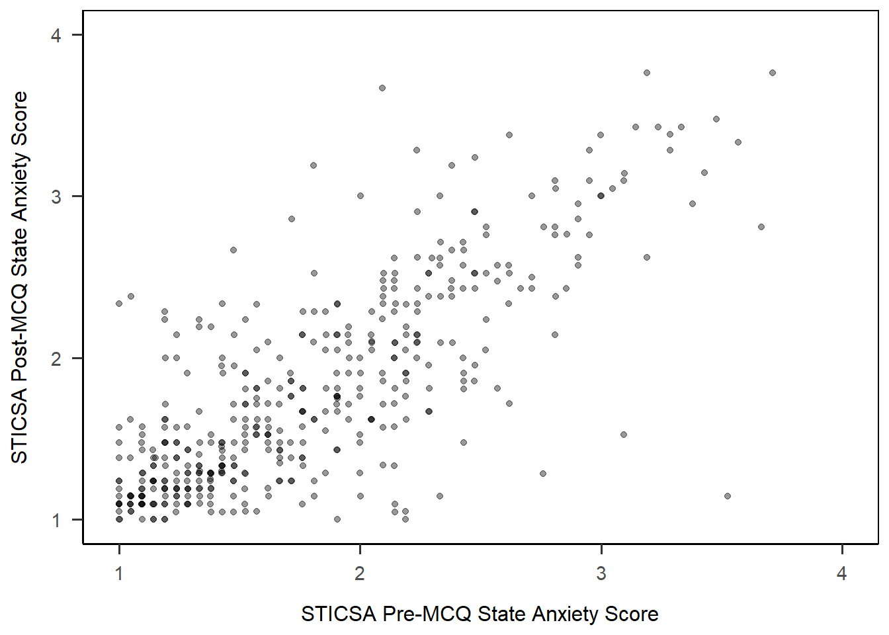

library(tidyverse)
library(viridis)
library(ggrain)07: Visualisations
Overview
This tutorial focuses on creating data visualisations using the {ggplot2} package. It covers the conceptual grammar of {ggplot} and a variety of examples of common plots. It also covers how to customise key elements of the plots, such as colour, axis labeling, and adding statistical summaries, and finishes with some tips on reporting figures in Quarto.
{ggplot2} and Data Visualisation Resources
Check out the following indispensible resources for building beautiful visualisations:
- From Data to Viz, a beautifully designed helper site to help you explore the options for visualising your data, with thorough links to…
- R Graph Gallery, an archive of plots in R all with reproducible code and tutorials to build them yourself.
- Tidy Tuesdays, which releases a new dataset each week, and people build and share beautiful visualisations, along with the code and frequently their process.
- Data visualisation using R, for researchers who don’t use R, a fantastic how-to from the brilliant team at PsychTeachR at Glasgow, that provides a very friendly, start-to-finish walkthrough of the whole process of data reading, manipulation, and plot-building.
What do UGs know?
Data visualisation with {ggplot2} is explicitly introduced near the end of the first term of Year 1 at Sussex, and practiced throughout the second term. In Year 2, there is less focus on constructing plots from scratch, and instead students are taught how to get a basic plot pre-made and then modify it using their {ggplot2} skills.
This tutorial includes essentially everything students are taught in Year 1, with a variety of extRas sprinkled in. In the next tutorial, we will look at the plots they are taught in Year 2, which accompany the relevant analysis (e.g. ANOVA, mediation, and moderation).
Setup
Packages
We will be relying heavily on the {ggplot2} package, naturally, which is part of {tidyverse}. You can load {ggplot2} by itself, but since we will also make use of some other {tidyverse} functions, it’s probably most efficient to simply load {tidyverse}.
We will also be using {ggrain} for raincloud plots and {viridis} for colour palettes.
Non-Explicit Function Calls
You may notice that I will abandon my usual explicit function style for {ggplot2} functions - so, for example, instead of ggplot2::ggplot(ggplot2::aes(...)) I’ll just write ggplot(aes()). In this case, it is much easier to simply load the {ggplot2} package and drop the package call, than to type the same package name over and over and over. It also makes the chonky {ggplot2} code a lot easier to read!
Data
Today we’re continuing to work with the dataset courtesy of fantastic Sussex colleague Jenny Terry. This dataset contains real data about statistics and maths anxiety. For these latter two tutorials, I’ve created averaged scores for each subscale, and dropped the individual items.
Codebook
There’s quite a bit in this dataset, so you will need to refer to the codebook below for a description of all the variables.
Dataset Info Recap
This study explored the difference between maths and statistics anxiety, widely assumed to be different constructs. Participants completed the Statistics Anxiety Rating Scale (STARS) and Maths Anxiety Rating Scale - Revised (R-MARS), as well as modified versions, the STARS-M and R-MARS-S. In the modified versions of the scales, references to statistics and maths were swapped; for example, the STARS item “Studying for an examination in a statistics course” became the STARS-M item “Studying for an examination in a maths course”; and the R-MARS item “Walking into a maths class” because the R-MARS-S item “Walking into a statistics class”.
Participants also completed the State-Trait Inventory for Cognitive and Somatic Anxiety (STICSA). They completed the state anxiety items twice: once before, and once after, answering a set of five MCQ questions. These MCQ questions were either about maths, or about statistics; each participant only saw one of the two MCQ conditions.
Important
For learning purposes, I’ve randomly generated some additional variables to add to the dataset containing info on distribution channel, consent, gender, and age. Especially for the consent variable, don’t worry: all the participants in this dataset did consent to the original study. I’ve simulated and added this variable in later to practice removing participants.
| Variable | Type | Description | Values |
|---|---|---|---|
| id | Categorical | Unique ID code | NA |
| distribution | Categorical | Channel through which the study was completed, either as a preview (before real data collection) or anonymous genuine responses. Note that this variable has been randomly generated and does NOT reflect genuine responses. | "preview" or "anonymous" |
| consent | Categorical | Whether the participant read and consented to participate. Note that this variable has been randomly generated and does NOT reflect genuine responses; all participants in this dataset did originally consent to participate. | "Yes" or "No" |
| gender | Categorical | Gender identity. Note that this variable has been randomly generated and does NOT reflect genuine responses. | "female", "male", "non-binary", or "other/pnts". "pnts" is an abbreviation for "Prefer not to say". |
| age | Numeric | Age in years. Note that this variable has been randomly generated and does NOT reflect genuine responses. | 18 - 99 |
| mcq | Categorical | Independent variable for MCQ question condition, whether the participant saw MCQ questions about mathematics or statistics. | "maths" or "stats" |
| stars_test_score | Numeric | Averaged score on the Test Anxiety subscale of the Statistics Anxiety Rating Scale (STARS) | 1 (low anxiety) to 5 (high anxiety) |
| stars_int_score | Numeric | Averaged score on the Interpretation Anxiety subscale of the Statistics Anxiety Rating Scale (STARS) | 1 (low anxiety) to 5 (high anxiety) |
| stars_help_score | Numeric | Averaged score on the Asking for Help subscale of the Statistics Anxiety Rating Scale (STARS) | 1 (low anxiety) to 5 (high anxiety) |
| stars_m_test_score | Numeric | Averaged score on the Test Anxiety subscale of the Statistics Anxiety Rating Scale - Maths (STARS-M), a modified version of the STARS with all references to maths replaced with statistics. | 1 (low anxiety) to 5 (high anxiety) |
| stars_m_int_score | Numeric | Averaged score on the Interpretation Anxiety subscale of the Statistics Anxiety Rating Scale - Maths (STARS-M), a modified version of the STARS with all references to maths replaced with statistics. | 1 (low anxiety) to 5 (high anxiety) |
| stars_m_help_score | Numeric | Averaged score on the Asking for Help subscale of the Statistics Anxiety Rating Scale - Maths (STARS-M), a modified version of the STARS with all references to maths replaced with statistics. | 1 (low anxiety) to 5 (high anxiety) |
| rmars_test_score | Numeric | Averaged score on the Test Anxiety subscale of the Revised Maths Anxiety Rating Scale (R-MARS) | 1 (low anxiety) to 5 (high anxiety) |
| rmars_num_score | Numeric | Averaged score on the Numerical Task Anxiety subscale of the Revised Maths Anxiety Rating Scale (R-MARS) | 1 (low anxiety) to 5 (high anxiety) |
| rmars_course_score | Numeric | Averaged score on the Course Anxiety subscale of the Revised Maths Anxiety Rating Scale (R-MARS) | 1 (low anxiety) to 5 (high anxiety) |
| rmars_s_test_score | Numeric | Averaged score on the Test Anxiety subscale of the Revised Maths Anxiety Rating Scale - Statistics (R-MARS-S), a modified version of the MARS with all references to maths replaced with statistics. | 1 (low anxiety) to 5 (high anxiety) |
| rmars_s_num_score | Numeric | Averaged score on the Numerical Anxiety subscale of the Revised Maths Anxiety Rating Scale - Statistics (R-MARS-S), a modified version of the MARS with all references to maths replaced with statistics. | 1 (low anxiety) to 5 (high anxiety) |
| rmars_s_course_score | Numeric | Averaged score on the Course Anxiety subscale of the Revised Maths Anxiety Rating Scale - Statistics (R-MARS-S), a modified version of the MARS with all references to maths replaced with statistics. | 1 (low anxiety) to 5 (high anxiety) |
| sticsa_trait_score | Numeric | Averaged score on the Trait Anxiety subscale of the State-Trait Inventory for Cognitive and Somatic Anxiety. | 1 (not at all) to 4 (very much so) |
| sticsa_pre_state_score | Numeric | Averaged score on the State Anxiety subscale of the State-Trait Inventory for Cognitive and Somatic Anxiety, pre-MCQ. | 1 (not at all) to 4 (very much so) |
| sticsa_post_state_score | Numeric | Averaged score on the State Anxiety subscale of the State-Trait Inventory for Cognitive and Somatic Anxiety, post-MCQ. | 1 (not at all) to 4 (very much so) |
| mcq_score | Numeric | Total (summed) score on the MCQ questions. | 0 (all incorrect) to 5 (all correct) |
If you have some experience with R, you are welcome to instead use another dataset that you are familiar with or are keen to explore. However, remember that anything you upload to the training Posit Cloud workspace is visible to all workspace admins, so keep GDPR in mind.
Grammar of Graphics
The {ggplot} package is a bit of a universe in its own right. Like R itself, it’s extremely powerful and versatile, and that also means there are a near-endless variety of things you could do and different ways to do them.
What we’ll cover in this tutorial is the core structure of building data visualisations in {ggplot2}, so that you have a solid base to build your own designs on. No matter what you’re trying to do, there’s nearly always a blog post, help document, or Stack Overflow post titled “How to do [whatever] in ggplot” to point you in the right direction!
Layers
Plots in {ggplot2} are built in layers. Each layer adds to or changes something about the plot; these can be big elements, like determining the type of plot to create, to small details like editing axis labels or changing colours. In {ggplot2}, each layer is a function.
If it helps, you can think of layers like different colours in a linocut print. Each additional layer of colour adds a bit more to the overall picture, building up from big blocks of colour to small details.
To build a visualisation in {ggplot2}, it’s a good idea to build your plot in the same way, from big picture to small detail. As we’ll see, I usually build plot layers like this:
dataset |>
aesthetics_mapping +
choose_type_of_plot +
add_more_elements +
edit_labels_or_colours +
apply_a_themeThese are guidelines, but the general => specific flow is for a good reason: layers are evaluated from top to bottom. So, it’s best to get the big pieces in place first, then fine-tune, than to have those fiddly bits overwritten by a major change at the end of the code.
Notice as well that layers are added to a plot object with + and NOT with |>. This is specific to {ggplot2} (AFAIK!) and is easy to forget, but don’t worry - it’s such a common thing that {ggplot2} has a very friendly error message for fixing it.
Error Watch:
mapping must be created by aes()
The actual error that pops up when you use a pipe instead of + isn’t super transparent. However, there is a very friendly reminder directly underneath to nudge you in the right direction. It’s a good reason to always read the error message in full!
anx_scores_data |>
ggplot(aes(x = mcq_sum)) |>
geom_histogram()Error in `geom_histogram()`:
! `mapping` must be created by `aes()`.
ℹ Did you use `%>%` or `|>` instead of `+`?Mapping
As we saw in the error just above, mapping is created with aes(). This little function defines the aesthetics of the plot - in other words, this is how you tell R what data you want it to plot. We’ll use the following general format to set up a plot:
dataset_name |>
ggplot(aes(x = variable_on_x_axis, y = variable_on_y_axis, ...))The ... takes additional arguments to add things like colour and fill.
Geoms, etc.
So, how do we actually add layers? There are several common types of functions with shared prefixes that do particular things. We’ll meet lots of examples of them just below, but as a quick reference for some of the more common function types:
geom_*(): Draw geometric objects to represent the data.stat_*(): Add elements to the plot calculated with statistical functions.scale_*(),labs(), andlims(): Adjust the appearance of the axes (labels, title, limits, etc.) or quickly adjust the labels or limits onlyguide_*(): Make adjustments to the scales or to other interpretational elements of the plot (such as legends for categories)theme_*(): Apply a pre-made theme to the entire plot
Tip
See the {ggplot} reference documentation for a comprehensive list and detailed guide to these functions and more.
Right, the best way to get a handle on these functions is to start building plots! So let’s jump in.
Histograms and Density Plots
Let’s start with a histogram, a very common type of visualisation that represents the frequency of each value in a variable. We’re going to first create a histogram of the mcq_score variable in the anx_scores_data dataset.
For a basic histogram, we need three elements. First, pipe in the data; then, set the aesthetics; then, use geom_histogram() to draw the plot.
anx_scores_data |>
ggplot(aes(x = mcq_score)) +
geom_histogram()`stat_bin()` using `bins = 30`. Pick better value with `binwidth`.Hooray! The downside is… that’s pretty ugly. For a quick glance this isn’t really any better than hist(). So - let’s make it better by doing the following:
- Adjusting the binwidth to present the values more sensibly
- Adding colour and fill
- Adjusting the axis labels and tick marks
- Applying a theme.
Tip
If you haven’t yet, you might want to pull up the help documentation for geom_histogram() to get a look at the options available.
Adjusting Binwidth
The message from the previous output gave us a helpful tip to deal with those weird bins:
`stat_bin()` using `bins = 30`. Pick better value with `binwidth`.So, let’s use binwidth = to choose a more appropriate value for this data. Because these are the summed MCQ scores, the values can only be whole numbers between 0 and 5. So, let’s try setting the binwidth to 1.
anx_scores_data |>
ggplot(aes(x = mcq_score)) +
geom_histogram(binwidth = 1)This is better, but now we’ve got some new problems: one, the automatically generated axis now only has 0, 2, and 4, when it would be better to have 0 - 5; and the histogram now looks like quite a shapeless lump. Let’s work on the colour first.
Colour and Fill Manual
It’s not obvious from the help documentation unfortunately (just mentioned in passing under the ... argument) but this function, and most geom_*() functions!, will take the arguments colour and fill. For this, we give each argument a string with a colour name in it. You can just guess at colour names until you find one you like, or you can refer to this massive list of R colour names to pick one.
Here’s an example of how that looks with some very boring colours, that’s a bit easier on the eyes than the dark grey lump above.
anx_scores_data |>
ggplot(aes(x = mcq_score)) +
geom_histogram(binwidth = 1,
colour = "black",
fill = "lightgray")This would be fine for formal reporting, but we’re going to be all about the aesthetics today and those colours are downright dreary. Let’s instead borrow from the Sussex official colour palette to set custom colours. I’m choosing “Sussex Flint”1 for the outline colour and “Deep Aquamarine” for the fill, but feel free to choose whatever you like. You could also use an online colour picker like this one to choose any hex code for any colour you can dream of to use!
anx_scores_data |>
ggplot(aes(x = mcq_score)) +
geom_histogram(binwidth = 1,
colour = "#003b49",
fill = "#007a78")What we can see here is that the “colour” in this case is the outline of the bars; and the “fill” is the colour inside the bars. This system is fairly consistent across geoms, but you may need to mix up the “colour” vs “fill” arguments depending on the exact effect you want.
With that sorted, let’s move onto the axis and ticks.
Adjusting Axes with scale_*()
You can use the labs() shortcut to adjust labels easily, but personally I prefer to go the long way round (surprise lol) and use the scale_*() family instead. These functions have specific names depending on which axis scale you want to adjust, and the way that data is measured. In this case I want to adjust the x-axis and the data is continuous2, so the function I need is scale_x_continuous().
The advantage of going through the extra trouble to use the scale_*() functions is that they allow you to adjust everything about that scale at once. So, I can use the arguments for scale_x_continuous() to change the axis label with name =, the breaks with breaks =, the limits with limits = …well, I’m sure you get the idea!
I can also do the same with the y axis, using (as you might have guessed) scale_y_continuous().
anx_scores_data |>
ggplot(aes(x = mcq_score)) +
geom_histogram(binwidth = 1,
colour = "#003b49",
fill = "#007a78") +
scale_x_continuous(name = "Total MCQ Score (out of 5)",
breaks = c(0:5)) +
scale_y_continuous(name = "Frequency",
breaks = seq(from = 0,
to = 120,
by = 20),
limits = c(0, 120))If you have a look at the argument to breaks and limits, you can see why we took some time early on learning about numeric vectors. breaks requires a vector of values indicating where the breaks should be, and limits requires a vector of two values, one for the minimum limit and the other for the maximum limit.
I’ve also used a new function, seq(), to create the y-axis breaks. This handy little base-R function generates a sequence of values, given the first and last values in the sequence and how much you want to increment by. I’ve asked it to start at 0, end at 120, and increment by 20 each time, instead of typing c(0, 20, 40, ...) myself.
Adding a Theme
That’s actually looking pretty snazzy at this point. The last thing we might want to do for now is to apply a theme. The default is theme_grey(), which I’m not a fan of. If you type theme_ into a code chunk, you’ll get a list of options to try out and find one you like.
However, I’m going to go straight the most extRa option, namely: an inbuilt APA-style theme from the {papaja} package, papaja::theme_apa(). Because I like how it looks, I’ll use the box = TRUE argument to draw a box around the whole plot. Teal (excuse me, Deep Aquamarine) isn’t a particularly APA-standard colour, but I like it, so there.
anx_scores_data |>
ggplot(aes(x = mcq_score)) +
geom_histogram(binwidth = 1,
colour = "#003b49",
fill = "#007a78") +
scale_x_continuous(name = "Total MCQ Score (out of 5)",
breaks = c(0:5)) +
scale_y_continuous(name = "Frequency",
breaks = seq(from = 0,
to = 120,
by = 20),
limits = c(0, 120)) +
papaja::theme_apa(box = TRUE)There you have it! That’s looking pretty nice, I think.
To lock it in, let’s get some practice using these functions with a minimally different example.
Facet Wrap
Warning
Note: This gets a bit into the weeds, so if you’d like to skip this section, feel free to skip down to the next type of plot.
Before we move on, a useful option here would be to visualise the MCQ scores for the two MCQ groups side by side, since this was our independent manipulation. To do this, we can use the facet_wrap() function to split our single plot into two based on a grouping variable - here, mcq. I’ve also changed the settings on the y-axis to adjust to the new scale.
anx_scores_data |>
ggplot(aes(x = mcq_score)) +
geom_histogram(binwidth = 1,
colour = "#003b49",
fill = "#007a78") +
scale_x_continuous(name = "Total MCQ Score (out of 5)",
breaks = c(0:5)) +
scale_y_continuous(name = "Frequency",
breaks = seq(from = 0,
to = 70,
by = 10),
limits = c(0, 70)) +
facet_wrap(~mcq) +
papaja::theme_apa(box = TRUE)There are a few more things I’d like to tweak about this plot. First, I’d love to have the maths and stats groups in different colours to differentiate them visually. Second, I want to format the “maths” and “stats” labels at the top of the plot.
To do the first, I’m going to actually go back up to the aes() mapping function and add mcq as the variable that determines both colour and fill, and drop the color and fill arguments from geom_histogram().
Next, I’m going to add a vector of names and values to the labeller = as_labeller(...) argument of facet_wrap(), which adds nice labels above each mini-plot.
Finally, I use two more scale_*() functions to set the colour and fill, with the order of the colours in the same order as the values of the mcq variable. The guide = "none" argument removes the automatically generated legend, which I didn’t need because I added the labels.
Whew! That’s it - here’s the final product.
anx_scores_data |>
ggplot(aes(x = mcq_score, colour = mcq, fill = mcq)) +
geom_histogram(binwidth = 1) +
scale_x_continuous(name = "Total MCQ Score (out of 5)",
breaks = c(0:5)) +
scale_y_continuous(name = "Frequency",
breaks = seq(from = 0,
to = 70,
by = 10),
limits = c(0, 70)) +
facet_wrap(~mcq,
labeller = as_labeller(
c(`maths` = "Maths MCQs",
`stats` = "Stats MCQs"))) +
scale_color_manual(values = c("#003b49", "#1b365d"),
guide = "none") +
scale_fill_manual(values = c("#007a78", "#7da1c4"),
guide = "none") +
papaja::theme_apa(box = TRUE)
Checking In
How are you doing? This is a bunch of new information, so don’t worry if you feel a bit overwhelmed. Honestly when I am constructing plots, a good portion of the time I spend to make them is either 1) digging back through my own previous documents to lift code I’ve already written or 2) searching online for help posts to figure out how to do things! I didn’t know how to do basically any of the formatting for the facet-wrapped plot above, and it took me about an hour of testing and searching to figure it out. I hope having these templates saves you a bit of time in the future.
Barplots
With some key ideas for building plots under our belts, let’s have a look at creating visualisations of categorical data.
To start with, we’ll need some (preferably interesting) categorical data to work with. Let’s begin by creating a categorical variable out of one of our continuous variables to practice what we covered in the previous tutorial. (This kind of operation is often not recommended for real analysis, but we’re learning so, y’know, it’s fine.)
Now, let’s get started on our barplot.
To keep this to a 2x2 comparison, let’s compare our new STARS help category in male vs female participants. So, we’ll need to filter before beginning the plot.
Then, we’ll put our variable of interest - here, stars_help_cat - on the x-axis. Remember that in plots like this, the y-axis is the number of responses, and as we saw with histograms just above, R can do that for us automatically. So, we’ll skip the y-axis and instead add gender as a fill variable. Then, we’ll ask R to draw the right kind of geom for us - the transparently named geom_bar() - and throw on a nice theme on the end for good measure.
anx_scores_data |>
dplyr::filter(gender %in% c("male","female")) |>
ggplot(aes(x = stars_help_cat, fill = gender)) +
geom_bar() +
papaja::theme_apa(box = TRUE)Hmm. This barplot is okay, but it’s not easy to compare the gender categories directly. The bars are filled with different colours based on the gender variable, which we wanted, but they’re stacked on top of each other!
Position Dodge
To “fix” this (assuming it isn’t what you want - it might be!), we can use the position argument in geom_bar() to move the bars side by side, instead of stacked on top of each other. This option is called “dodge”, so let’s see how it looks now:
anx_scores_data |>
dplyr::filter(gender %in% c("male","female")) |>
ggplot(aes(x = stars_help_cat, fill = gender)) +
geom_bar(position = "dodge") +
papaja::theme_apa(box = TRUE)Nice! Already that’s much better, and looking more like we might expect a grouped barplot to look. We do need to do something about those awful colours, but first let’s fix something that’s bothering me: the order of the x-axis categories.
Reordering Categories
The stars_help_cat variable on the x-axis has automatically ordered the categories in alphabetical order, “high” and then “low”. As I am a native speaker of a language that reads left to right, I’d prefer to have “low” on the left and “high” on the right3. So, how can I change the order of these categories?
Option 1: Scale Labels
We’ve seen the scale_*() functions already - this time, we have a discrete x-axis variable, so we need scale_x_discrete(). We’ve even already seen the limits = argument used to set the upper and lower bound of the plot. Here, we can use this argument to specify the order we want the categories to be displayed in as well.
anx_scores_data |>
dplyr::filter(gender %in% c("male","female")) |>
ggplot(aes(x = stars_help_cat, fill = gender)) +
geom_bar(position = "dodge") +
scale_x_discrete(limits = c("low", "high")) +
papaja::theme_apa(box = TRUE)Option 2: Factor Levels
We haven’t covered factors much in this course so far; for our purposes, most of the time, R treats character data more or less the same way it would treat factors so it hasn’t been a problem (yet…). However, converting our stars_help_cat variable to a factor would let us specify an order of factor levels.
Let’s see how that would work. Here I’m using mutate() to do the factor conversion before I pipe the data on into ggplot(). We’ve seen the factor() function before, just adding the levels = argument to reorder the levels in the order we wanted. The resulting plot then has the levels in the right order.
anx_scores_data |>
dplyr::filter(gender %in% c("male","female")) |>
dplyr::mutate(stars_help_cat = factor(stars_help_cat,
levels = c("low", "high"))
) |>
ggplot(aes(x = stars_help_cat, fill = gender)) +
geom_bar(position = "dodge") +
papaja::theme_apa(box = TRUE)
Which to prefer? If you are going to change your categorical variables into factors anyway, it might be a good idea to set any factor ordering at that point, so you don’t need to bother with this later. Otherwise, it doesn’t matter as long as your plot looks the way you want it at the end!
Right, now that all the structural stuff is out of the way, let’s finish up.
Check Order of Labels!
Keep in mind that ggplot() is just applying the labels as strings on top of your plot. This means that if you, for instance, reorder your categories on the x-axis but then forget to update the order of axis labels in your code, your plot will be wrong. It’s always important to double-check that the labels you add do in fact correspond correctly to the order of the categories in the plot to avoid mislabeling.
As an example, the code below is identical to the solution above, except I’ve commented out the limits argument in scale_x_discrete() that reorders the categories on the x-axis. However, I’ve left in the labels argument that whacks on the axis labels in the reordered order. Comparing to the plot above, we can see by the sizes of the bars that the actual categories are in high-low order, despite what the nicely formatted labels say.
anx_scores_data |>
dplyr::filter(gender %in% c("male","female")) |>
ggplot(aes(x = stars_help_cat, fill = gender)) +
geom_bar(position = "dodge") +
scale_x_discrete(name = "STARS Asking for Help Anxiety",
## limits = c("low", "high"),
labels = c("Low", "High")) +
scale_y_continuous(name = "Count",
limits = c(0, 175),
breaks = seq(0, 175, by = 25))+
scale_fill_discrete(name = "Gender",
labels = c("Female", "Male"),
type = c("#1b365d", "#f2c75c")) +
papaja::theme_apa(box = TRUE)One method to avoid this is to add formatting outside of ggplot(). In essence, instead of pasting on the labels afterwards, you edit the data just before piping into ggplot() so that the labels are already correctly formatted and in the right order. For this current situation with one plot, it’s much of a muchness whether the relabeling is in the data (via mutate) or in the axis labels. However, if you wanted to create multiple plots with these variables, relabeling the data just before plot creation would likely be more efficient than pasting in/checking the labels for each plot.
anx_scores_data |>
dplyr::filter(gender %in% c("male","female")) |>
## This backticked name is kind of an extreme step! But it's possible
dplyr::mutate(`STARS Asking for Help Anxiety` = factor(stars_help_cat,
levels = c("low", "high"),
labels = c("Low", "High")),
Gender = factor (gender,
levels = c("female", "male"),
labels = c("Female", "Male"))) |>
## Note the formatted names here, and the backticks for the illegal variable name
ggplot(aes(x = `STARS Asking for Help Anxiety`, fill = Gender)) +
geom_bar(position = "dodge") +
scale_y_continuous(name = "Count",
limits = c(0, 175),
breaks = seq(0, 175, by = 25))+
scale_fill_discrete(type = c("#1b365d", "#f2c75c")) +
papaja::theme_apa(box = TRUE)
Quick Test: \(\chi^2\)
While we’re here looking at grouped barplots for categorical data, we can also have a quick \(\chi^2\) test of association as a treat. Just like we did t-tests with t.test() and correlation tests with cor.test(), for \(\chi^2\) we have chisq.test().
Raincloud and Violin Plots
For this section, we’ll focus on making nice raincloud plots, which we teach repeatedly in UG Year 1. For both of these plots, we’re going to expand our {ggplot} vocab by explicitly including a y-axis variable.
Raincloud plots are introduced in the second half of first year for Sussex UGs. I love them especially because they pack in so much useful information in a reasonably easy-to-read plot. We teach UGs to read them and practice them several times, including in an assessment. Despite their complexity, they are extremely easy to create thanks to the recently-released {ggrain} package that does most of the heavy lifting for you.
Let’s start by creating a basic raincloud plot of STARS Test subscale score split up by MCQ group. As we already covered above, I’m going to clean up the plot a bit with some scale formatting and a theme.
1anx_scores_data |>
2 ggplot(aes(x = mcq, y = stars_test_score)) +
3 geom_rain() +
4 scale_x_discrete(name = "MCQ Condition", labels = c("Maths", "Stats")) +
5 scale_y_continuous(name = "Mean STARS Test Score") +
6 papaja::theme_apa(box = TRUE)- 1
-
Take the dataset
anx_scores_data, and then - 2
-
Set up a plot, mapping
mcqto the x-axis andstars_test_scoreto the y-axis, plus - 3
- Draw a raincloud plot, plus
- 4
- Adjust the discrete x axis by giving it a name, and relabelling the group labels, plus
- 5
- Adjust the continuous y axis by giving it a name, plus
- 6
- Add an APA-style theme.
The default plot has three parts. From left to right, they are: a scatter of the data points; a boxplot; and a density plot of the data, turned on its side. If you tilt your head to the right, you can see that this looks a bit like a (very lumpy) cloud with the data falling like rain underneath.
We already have a good amount of information here, but one thing we are missing is the means in each group. We introduce raincloud plots in the context of t-tests, where the difference in group means is the key element of interest, so let’s add them to our plot, along with some colour adjustments.
Calculating Stats
To add means and CIs to our plot, we’ll need to calculate them. However, there’s no need to create a summary first - we can use a stat_*() function to calculate the necessary statistics inside our plot.
In this case, we can use stat_summary() to produce some summary statistics. To really make it quick, we’re going to quote the function mean_cl_boot, which calculates means and bootstrapped CIs. That’s it - just that one line does all the maths and adds the result to the plot. However, the new element will show up as black by default, so let’s also add in a colour to make sure we can actually see it. (I’ve chosen something obnoxious to make it easy to find!)
1anx_scores_data |>
2 ggplot(aes(x = mcq, y = stars_test_score)) +
3 geom_rain() +
4 scale_x_discrete(name = "MCQ Condition", labels = c("Maths", "Stats")) +
5 scale_y_continuous(name = "Mean STARS Test Score") +
6 stat_summary(fun.data = mean_cl_normal, colour = "red") +
7 papaja::theme_apa(box = TRUE)- 1
-
Take the dataset
anx_scores_data, and then - 2
-
Set up a plot, mapping
mcqto the x-axis andstars_test_scoreto the y-axis, plus - 3
- Draw a raincloud plot, plus
- 4
- Adjust the discrete x axis by giving it a name, and relabelling the group labels, plus
- 5
- Adjust the continuous y axis by giving it a name, plus
- 6
-
Calculate a summary of the data using the function
mean_cl_normalfor means and CIs, and add to the plot in red, plus - 7
- Add an APA-style theme.
Scatterplots
Let’s now turn to continuous variables only and produce a scatterplot to visualise a linear relationship.
To start, let’s set up a basic plot using the STICSA pre- and post-MCQ state anxiety scores. The new element is geom_point(), which draws points 4. In that layer, we also have two new arguments. The first is alpha, which sets the transparency of the points between 1 (solid) and 0 (invisible). The second is position = "jitter", which introduces some random noise into the placement of the points so make it easier to see overlapping values.
1anx_scores_data |>
2 ggplot(aes(x = sticsa_pre_state_score, y = sticsa_post_state_score)) +
3 geom_point(alpha = 0.4, position = "jitter") +
4 scale_x_continuous(name = "STICSA Pre-MCQ State Anxiety Score",
limits = c(1, 4)) +
5 scale_y_continuous(name = "STICSA Post-MCQ State Anxiety Score",
limits = c(1, 4)) +
6 papaja::theme_apa(box = TRUE)- 1
-
Take the dataset
anx_scores_data, and then - 2
-
Set up a plot, mapping
sticsa_pre_state_scoreto the x-axis andsticsa_post_state_scoreto the y-axis, plus - 3
- Draw points, with 40% transparency and some random noise to separate them, plus
- 4
- Adjust the continuous x axis by giving it a name, and setting the limits to 1 and 4, plus
- 5
- Adjust the continuous x axis by giving it a name, and setting the limits to 1 and 4, plus
- 6
- Add an APA-style theme.

Not bad, eh? Right off the bat we get a very passable scatterplot. Now, assuming that this scatterplot might accompany a linear model, we might also like to draw that model on our plot.
Line of Best Fit
Unfortunately the function to add a line of best fit isn’t as intuitively named as you might expect. Both geom_smooth() and stat_smooth() will do what we want here; in first year, we teach UGs geom_smooth() for this, so we’ll use that here too. (There is a geom_line() but isn’t quite the same!)
As we did with the histogram previously, we can add colour and fill arguments to adjust the colour. Here, colour determines the colour of the line, and fill determines the colour of the shaded confidence intervals.
anx_scores_data |>
ggplot(aes(x = sticsa_pre_state_score, y = sticsa_post_state_score)) +
geom_point(alpha = 0.4, position = "jitter") +
1 geom_smooth(method = "lm",
colour = "darkblue",
fill = "darkcyan") +
scale_x_continuous(name = "STICSA Pre-MCQ State Anxiety Score",
limits = c(1, 4)) +
scale_y_continuous(name = "STICSA Post-MCQ State Anxiety Score",
limits = c(1, 4)) +
papaja::theme_apa(box = TRUE)- 1
-
Add a line of best fit using the “
lm” function, with a dark blue line and dark cyan CIs.
Colour and Fill Palette
In the previous Colour and Fill section we chose colours by name or hex code to add to a plot. However, there are a wide variety of pre-made colour palettes to make use of. So, instead of choosing individual colours, you can quickly apply existing colour palettes.
Colour Palette Options
Looking for the right colour scheme? Try these resources:
- This blog post on R colour palettes is a great overview of some of the most popular options available, with lots of examples.
- The {paletteer} package for quick access to any R colour palette and to an overview of all the palettes available
A popular palette and the one we’ll use for this task is from the lovely {viridis} colour palette package, designed to be pretty, print-friendly, and accessible (robust to colourblindness).
To use the palettes, we start out by dropping the colour and fill arguments from within geom_smooth(), and instead setting colour and fill arguments at the beginning of the plot, in the aes() function along with x and y. This will apply the same colour palette across all elements in the plot that can have colour - namely, the points from geom_point(), and the line of best fit from geom_smooth(). By setting them both to mcq, the colours will be consistent across MCQ types between all of these elements. Incidentally, doing this will also split our single LM line into two lines: one for each level of the mcq variable.
anx_scores_data |>
1 ggplot(aes(x = sticsa_trait_score, y = sticsa_post_state_score,
colour = mcq, fill = mcq)) +
geom_point(alpha = 0.4, position = "jitter") +
geom_smooth(method = "lm") +
scale_x_continuous(name = "STICSA Pre-MCQ State Anxiety Score",
limits = c(1, 4)) +
scale_y_continuous(name = "STICSA Post-MCQ State Anxiety Score",
limits = c(1, 4)) +
papaja::theme_apa(box = TRUE)- 1
-
Set up the plot, mapping
sticsa_pre_state_scoreto the x-axis andsticsa_post_state_scoreto the y-axis, and both colour and fill tomcq.
A start - but let’s do something about that horrible default colour palette!
Just as we had scale_x... and scale_y... functions for specifying the x and y scales, we have scale_colour... and scale_fill... for specifying the details about the way the colour and fill appears. Here, I’m using viridis, which has its own dedicated functions, scale_colour_viridis() and scale_fill_viridis()5. Within those two new elements, we have the same two elements:
name: gives a title for the colour/fill legenddiscrete: tells {viridis} whether the variable to be coloured/filled is discrete or not. Here it is (it’smcq, a categorical variable), so we set this toTRUE.labels: applies labels to the levels of the variables.
anx_scores_data |>
ggplot(aes(x = sticsa_trait_score, y = sticsa_post_state_score,
colour = mcq, fill = mcq)) +
geom_point(alpha = 0.4, position = "jitter") +
geom_smooth(method = "lm") +
scale_x_continuous(name = "STICSA Pre-MCQ State Anxiety Score",
limits = c(1, 4)) +
scale_y_continuous(name = "STICSA Post-MCQ State Anxiety Score",
limits = c(1, 4)) +
1 scale_colour_viridis(name = "MCQ Type",
discrete = TRUE,
labels = c("Maths", "Stats")) +
scale_fill_viridis(name = "MCQ Type",
discrete = TRUE,
labels = c("Maths", "Stats")) +
papaja::theme_apa(box = TRUE)- 1
- Adjust the fill and colour by applying the viridis colour palette, giving each a name, using discrete values, and relabelling the categories.
That’s looking fairly nice now!
3D Plots
Warning
Note: 3D plots really should be used with caution, and this bit is just for fun - feel free to skip if you’re not inclined. If you’re keen to have a go, the code below gets you an interactive, useable 3D scatterplot in no time at all, but think carefully about whether this is really the best way to represent your data.
In something of a departure for us, we’re going to use a package that isn’t {ggplot2} for this next bit. (Shock! Horror!) Instead, we’ll use the plot3d() function from the {rgl} package to get a snazzy interactive 3D-plot that does rotation and zoom right out of the box. The syntax might look slightly unfamiliar, but it’s got the same underlying idea as what we’ve seen so far.
In order to have points coloured by MCQ type, I’ve created a new variable in the dataset assigning colours based on the values of the mcq variable. This and the rest of the code is borrowed straight from R Graph Gallery’s very helpful mini-tutorial on {rgl}.
# Add a new column with color
anx_scores_data <- anx_scores_data |>
dplyr::mutate(
plot_colours = ifelse(mcq == "maths", "orange", "darkcyan")
)Next, we’ll use the rgl::plot3d() function to generate the plot. The x, y, and z arguments each are specified using $ subsetting, and the colours in col come from the new variable I created just above. The rest of the arguments change the appearance of the points (type and size) and set the axis labels.
rgl::plot3d(
x = anx_scores_data$sticsa_trait_score,
y = anx_scores_data$sticsa_post_state_score,
z = anx_scores_data$sticsa_pre_state_score,
col = anx_scores_data$plot_colours,
type = "s",
radius = .05,
xlab = "STICSA Trait", ylab = "STICSA Post State", zlab = "STICSA Pre State"
)
Reporting with Quarto
Tip
As ever, I strongly recommend referring to the Quarto Guide as the first stop for possibilities and/or problem-solving with Quarto.
In a previous section, we created a lovely scatterplot for a (hypothetical) linear model. Let’s see now how we could adjust the way that figure would appear in a Quarto document.
To begin, I’ve stored the final output for the LM plot we created above in a new object, mcq_lm_plot, to make the subsequent sections easier to read.
mcq_lm_plot <- anx_scores_data |>
ggplot(aes(x = sticsa_trait_score, y = sticsa_post_state_score,
colour = mcq, fill = mcq)) +
geom_point(alpha = 0.4, position = "jitter") +
geom_smooth(method = "lm") +
scale_x_continuous(name = "STICSA Pre-MCQ State Anxiety Score",
limits = c(1, 4)) +
scale_y_continuous(name = "STICSA Post-MCQ State Anxiety Score",
limits = c(1, 4)) +
scale_colour_viridis(name = "MCQ Type", discrete = TRUE, labels = c("Maths", "Stats")) +
scale_fill_viridis(name = "MCQ Type", discrete = TRUE, labels = c("Maths", "Stats")) +
papaja::theme_apa(box = TRUE)Then, we’re just going to put our plot object in a new code chunk, in the document where we want it to appear. Equally, this could be the code that produces the plot; it doesn’t matter either way.
```{r}
mcq_lm_plot
```To change or add settings for a specific plot, we will use code chunk options, which we previously encountered in Tutorial 04. These options let us determine the way the code chunk behaves. Here, we’ll also see how we can use those code chunk options to style and format our plot.
Captions and Alt Text
First, we might add a caption to the plot, using the fig-cap option. You may have noticed that we didn’t give our plot a caption/title previously, and this is why. You can of course write whatever you like, but here’s an example.
```{r}
#| fig-cap: "Scatterplot of mean pre- and post-MCQ state anxiety scores"
mcq_lm_plot
```You should also add alt text to your figures to make them readable by screenreaders and other assistive technology. It is important to describe the insights from the visualisations clearly, such as the key patterns, connections, or findings, to ensure they are accessible. This Medium article on scientific alt text gives some clear guidelines for keeping alt text informative, brief, and useful.
We can add alt text to our figure using the fig-alt option:
```{r}
#| fig-cap: "Scatterplot of mean pre- and post-MCQ state anxiety scores"
#| fig-alt: "Scatterplot of mean pre- and post-MCQ state anxiety scores showing a positive relationship, with separate linear regression lines for the two MCQ types both also showing a very similar positive relationship in both conditions"
mcq_lm_plot
```Cross-Referencing
As with tables, we can also include automatic cross-referencing for figures in our document. This means that Quarto will automatically number our figures and include links to those figures in the text of the document.
To do this, let’s first give our figure a label. Labels are essentially names for this particular figure that will allow us to refer to it in the text. In order to be recognised for cross-referencing, the label must start with the fig- prefix.
```{r}
#| label: fig-mcq-lm
#| fig-cap: "Scatterplot of mean pre- and post-MCQ state anxiety scores"
mcq_lm_plot
```Then, use this label with an @ symbol in the text of the document to generate the cross-reference. For instance, I could write:
The result of this analysis is visualised in
@fig-mcq-lm.
Which would appear when rendered as below - notice the caption now has “Figure 1” added to it to correspond to the in-text numbering.
The result of this analysis is visualised in Figure 1.
Very well done on your hard work so far. We’ll keep using our {ggplot2} chops when we dig into analysis next week, and see how we can easily create plots to accompany those analyses using built-in functions.
Footnotes
You may notice a certain commonality to the colour theme of this website!↩︎
Yes, this is not technically true because the values can only be whole numbers between 0 and 5, but what matters here is that R thinks this is continuous data.↩︎
See e.g. Shaki and Fischer, 2008↩︎
Tragically,
geom_scatter()isn’t a thing, not matter how many times I try!↩︎Naturally, if you want to use palettes from a different package, you’ll need to use the functions from that package instead! Those functions may also work a bit differently, so make sure you read the help documentation if you get stuck.↩︎